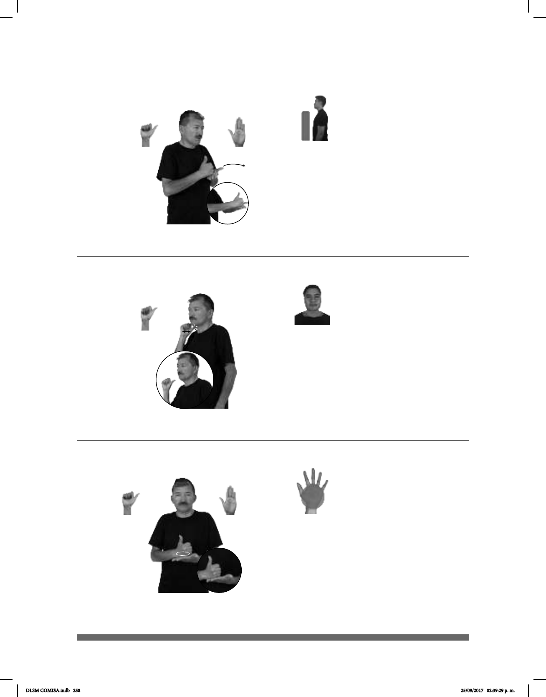

258
(A-76)
(A-77)
ADORNAR NAVIDAD pos-MI ABUELO AYUDAR
Mi abuelo ayuda a la colecta navideña.
PARQUE ADENTRO AZCAPOTZALCO pro-NOSOTROS IR
Vamos al parque de Azcapotzalco.
(A-78)
pos-MI PUERTA COLOR AZUL pro-YO YA PINTAR
Pinté mi puerta de color azul.
Seña: SB
MD A.1, MB B-P.2
MD palma hacia adentro.
MB palma hacia arriba.
A la altura del pecho. MD
sobre MB.
MD y MB recto hacia el
frente.
Cabeza
adelantada, labios protruidos.
v. tr. Cooperar en la
realización de algo o contribuir a que
ocurra, se consiga o resulte más fácil.
Seña: SM
A.4
Palma hacia afuera.
Dedo pulgar sobre el cuello.
La mano simula varios saltos.
Cabeza ligeramente
ladeada hacia la izquierda.
Delegación ubicada al norte de
de la Ciudad de México.
La seña tiene su origen en la
violencia que existía antes en la delegación
Azcapotzalco.
Seña: SB
MD A.1, MB
B-P.2
MD palma hacia
adentro. MB palma hacia arriba.
A la altura del pecho.
MD sobre MB.
La MD se mueve
formando círculos.
adj. y sust. m. Que es
del color del cielo sin nubes o del
mar cuando brilla el Sol.
DLSM COMISA.indb 258 25/09/2017 02:39:29 p. m.